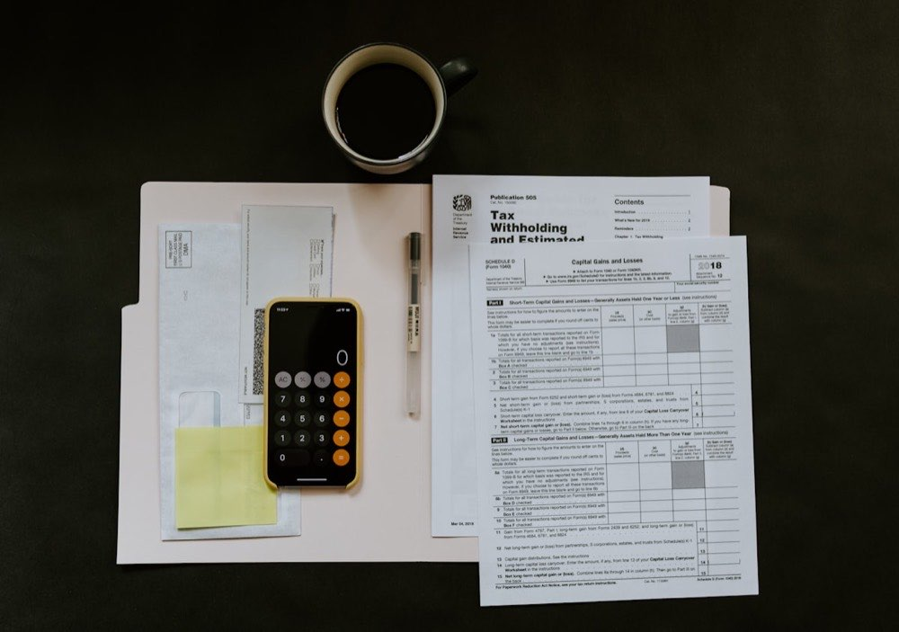

Personal Loan Default in India: Legal Consequences & Your Options
Last updated: 2 June 2026 | Loan Free Editorial Team | 7 min read

Quick answer
A personal loan default in India is generally a civil matter, not in itself a criminal offence, so you are not automatically arrested for being unable to repay. A lender typically moves through reminders, recovery agents (within the RBI Fair Practices Code), a demand or legal notice, and possibly a civil suit or arbitration. Default lowers your CIBIL score and recovery harassment is restricted by RBI rules. The best response is to engage early — talk to the lender about restructuring, a one-time settlement, or responding properly to any notice.
A personal loan is unsecured — there is no house or car pledged as collateral. That does not mean a missed repayment has no consequences, but it also does not mean what many borrowers fear. In India, a personal loan default is usually a civil matter, handled through a structured recovery process rather than through automatic arrest. Knowing how that process actually works, what it does to your credit, and what protections and options you have makes it far easier to respond calmly and sensibly.
What counts as a personal loan default?
A default is not a single dramatic event — it is the point at which you stop meeting the repayment terms set out in your loan agreement. In practice it usually develops in steps: a missed EMI first becomes overdue, late fees and additional interest may be charged, and the account is flagged as irregular. Lenders commonly classify a loan account as a Non-Performing Asset (NPA) once repayments have been overdue for an extended period, in line with their internal and regulatory norms.
The exact triggers and timelines are governed by your specific loan contract and the lender's policy, so they vary from one lender to another. The important point is that default is a breach of the repayment arrangement under the loan agreement — a contractual issue — rather than an accusation of any offence.
Is default a crime? Civil vs criminal
This is the question that worries borrowers most, so it is worth being precise. Being unable to repay a personal loan is generally a civil matter, not in itself a criminal offence. You are not automatically arrested or sent to jail simply because you have defaulted. A lender's normal route is to recover the money owed through the civil process — a demand, and if needed a civil suit or arbitration — not through the police.
Criminal angles can arise only in limited and separate situations. For example, if a cheque issued towards repayment is dishonoured, that may attract proceedings under Section 138 of the Negotiable Instruments Act; and clear, provable fraud — such as taking a loan on forged documents with no intention to repay — is a different matter from ordinary inability to pay. These are exceptions tied to specific conduct, not the default itself. Treating a default as if it were a crime usually leads to panic and poor decisions; treating it as a contractual problem to be resolved is far more constructive.
The typical recovery sequence
Most lenders follow a broadly similar sequence when a personal loan slips into default. The stages below are typical, but the order and timing depend on the lender and your agreement.
- Reminders: initial calls, SMS, emails and late-fee notifications asking you to clear the overdue amount.
- Recovery follow-up: contact by the lender's recovery team or agents. Agents must operate within the limits of the RBI Fair Practices Code — they are not permitted to threaten, abuse or intimidate.
- Demand / legal notice: a formal written notice, often from the lender's lawyer, calling on you to pay and setting out the consequences of continued non-payment. A notice is a request for resolution, not a verdict.
- Civil suit or arbitration: if the account remains unresolved, the lender may file a civil suit to recover the dues, or invoke an arbitration clause if the loan agreement contains one.
Throughout this sequence there is room to engage and negotiate. Responding — rather than going silent — keeps options open and signals good faith, which lenders generally view favourably.
Effect on your CIBIL score
One of the most lasting consequences of default is on your credit record. Missed payments and default are reported to credit bureaus such as CIBIL and typically lower your credit score. These records can remain on your report for several years, which may make it harder and more expensive to obtain new loans or credit cards in the meantime.
The good news is that a damaged score is not permanent. Resolving the account — whether through full repayment, a restructuring arrangement or a properly documented settlement — and then maintaining timely payments on your other obligations helps rebuild the profile over time. We do not guarantee any specific score outcome, because bureaus and lenders apply their own reporting rules, but acting to resolve a default is generally better for your long-term credit than letting it age unresolved.
Your protections against harassment
Owing money does not strip you of your rights. Recovery in India is meant to be conducted within the RBI Fair Practices Code, which places limits on how lenders and their agents may pursue dues. Borrowers are generally to be contacted only at reasonable hours, and recovery practices that involve threats, abuse, public shaming or intimidation are not acceptable.
If you experience harassment, a few practical steps help: keep a record of calls, messages and visits; raise a written complaint with the lender's grievance channel; and seek legal guidance if the behaviour continues. Lawful recovery and unlawful harassment are not the same thing, and you are entitled to be treated with basic dignity even while a debt is outstanding. Our recovery agent harassment protection support can help you document and respond to such conduct.
Your options to resolve a default
A default is a problem to be managed, and there is usually more than one path forward. The right one depends on your income, the total outstanding and your overall circumstances.
- Talk to the lender early: proactive communication often opens up arrangements that are unavailable once the matter has escalated. Explain your situation honestly.
- Restructuring: ask whether the EMI, tenure or repayment schedule can be reworked so the loan becomes serviceable again while you still repay what you owe.
- One-time settlement (OTS): in genuine hardship, a lender may agree to close the account for a reduced amount. This is a negotiated arrangement recognised under the Indian Contract Act, 1872; the lender decides whether and on what terms to agree, and you should always obtain a written settlement letter and a No Objection Certificate afterwards. Our personal loan settlement support guides this process.
- Respond properly to notices: a demand or legal notice should be answered, not ignored. A well-prepared, timely reply protects your position. Our legal notice reply service helps with this, and you can read our guide on how to respond to a bank legal notice.
It is also worth being aware, in general terms, that recovery claims are subject to time limits under the Limitation Act, 1963. The interaction between limitation, acknowledgements of debt and recovery proceedings is technical, so treat this only as background and take advice on your specific facts. For a wider overview of negotiated exits, see our debt settlement in India beginner's guide.
Common mistakes to avoid
- Going silent and ignoring calls and notices — this removes your chance to negotiate and lets the matter escalate.
- Assuming the worst and panicking about arrest, instead of treating the default as a civil, contractual issue that can be resolved.
- Paying any settlement amount without a written settlement letter and a No Objection Certificate confirming closure.
- Reacting to harassment with fear rather than keeping records and raising a proper complaint.
- Deliberately defaulting in the hope of a discount — we do not advise intentional default; it adds penalties, interest and legal risk.
Frequently asked questions
A personal loan default is generally a civil matter, not in itself a criminal offence, so a borrower is not automatically arrested or jailed simply for being unable to repay. A lender usually pursues recovery through reminders, a demand or legal notice, and a civil suit or arbitration. Criminal angles can arise only in limited situations, such as a bounced cheque under Section 138 of the Negotiable Instruments Act or proven fraud, which are separate from the default itself.
Recovery usually moves in stages: first reminder calls, messages and late-fee notifications; then follow-up by recovery agents, who must operate within the RBI Fair Practices Code; then a formal demand or legal notice asking for payment; and, if the matter remains unresolved, a civil suit for recovery or arbitration where the loan agreement provides for it. The exact steps and timing depend on the lender's internal policy and your loan agreement.
Missed payments and default are reported to credit bureaus such as CIBIL and typically lower your credit score, and the record can remain on your report for several years. This can make it harder to obtain new credit. Resolving the account, whether by repayment, restructuring or a documented settlement, and then maintaining timely payments helps rebuild the profile over time, though we do not guarantee any specific score outcome.
No. The RBI Fair Practices Code restricts how recovery is conducted. Agents are generally expected to contact borrowers only at reasonable hours and to avoid threats, abuse, public shaming or intimidation. If you face harassment, you can keep records, raise a written complaint with the lender, and seek legal guidance. Lawful recovery and unlawful harassment are not the same thing.
Related services & guides
- Personal Loan Settlement support
- Legal Notice Reply support
- Recovery Agent Harassment Protection
- How to Respond to a Bank Legal Notice
- Debt Settlement in India: Beginner's Guide
References
- Reserve Bank of India — Fair Practices Code & borrower-protection guidelines: rbi.org.in
- The Indian Contract Act, 1872 & the Limitation Act, 1963 (settlement and time limits): indiacode.nic.in
About this guide. Written by the Loan Free Editorial Team and reviewed for accuracy against current RBI guidance and Indian law by our debt-resolution advisors. Information is provided for general understanding and was last updated on 2 June 2026. It is not a substitute for advice on your specific case — contact us for a confidential review.